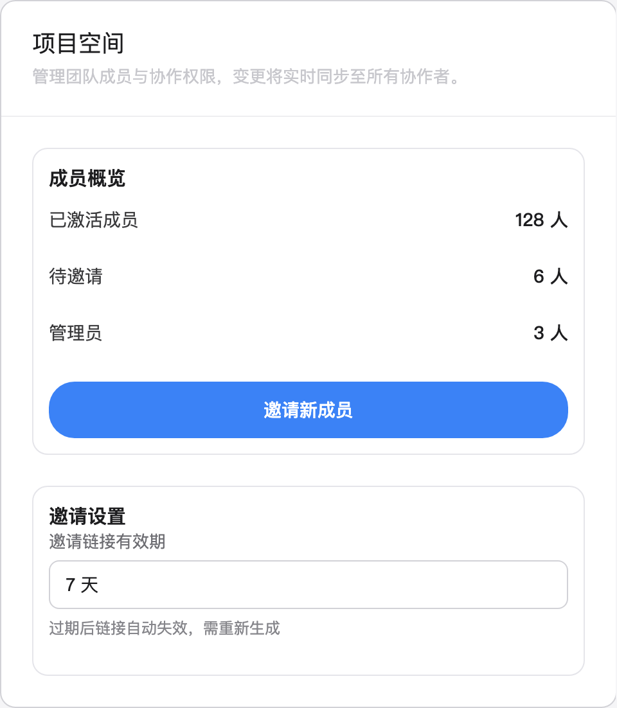
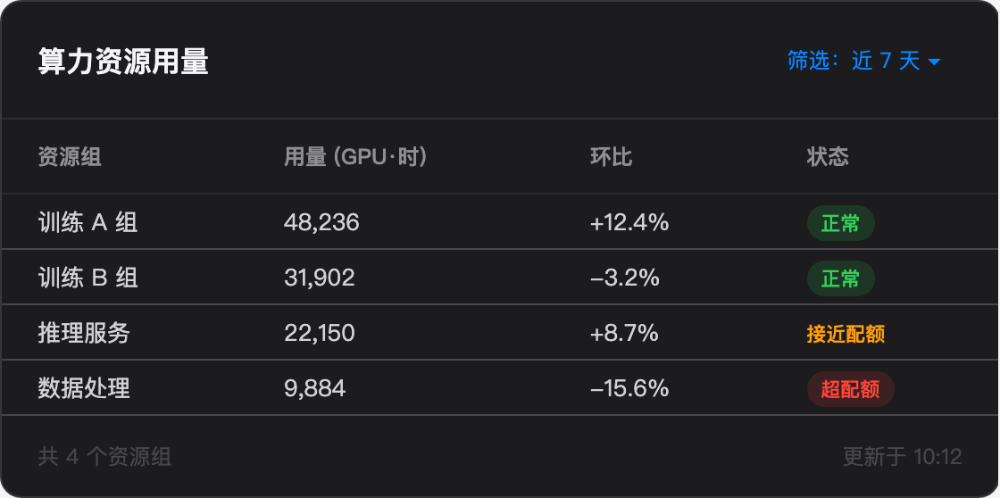
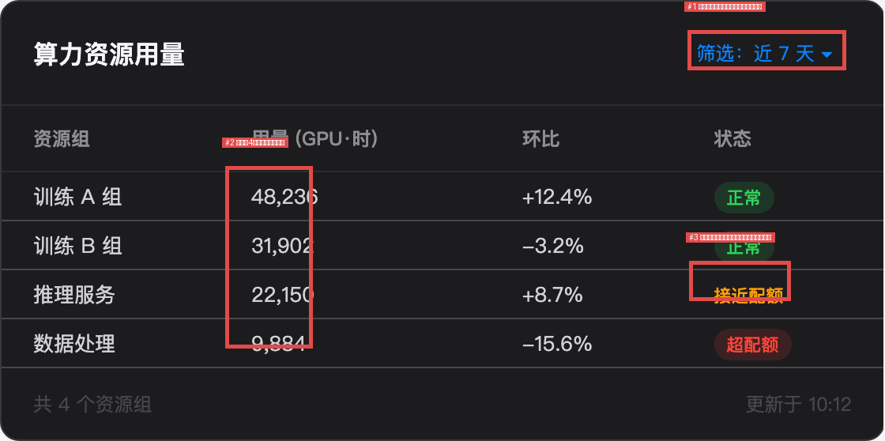
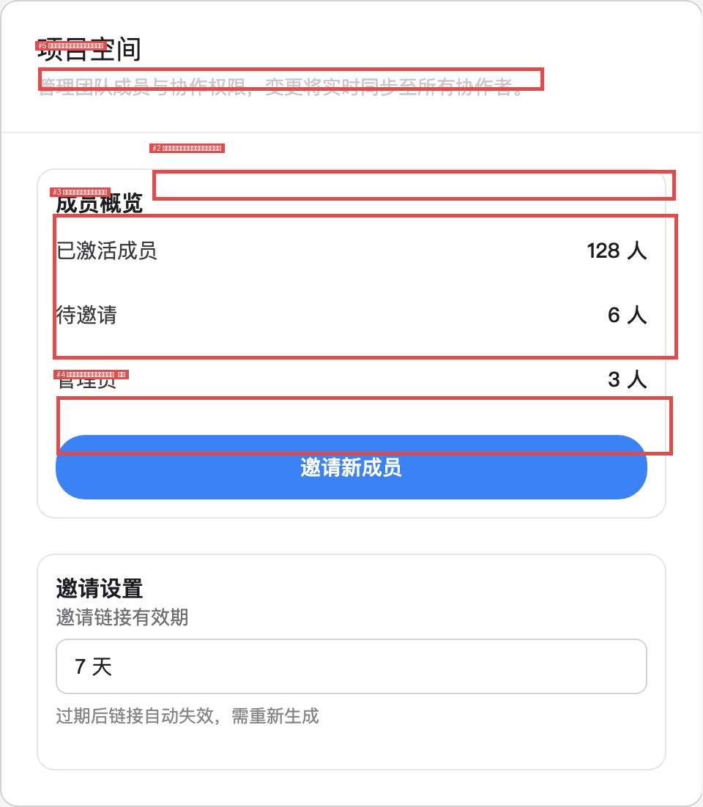
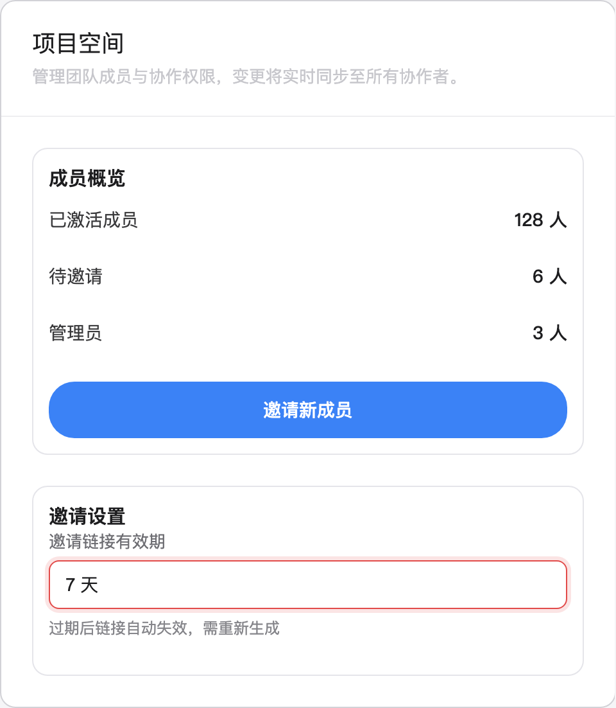

每个前端团队都经历过这种事：设计师对着 Figma 稿说「这个蓝不对，圆角也大了」，开发盯着屏幕找了半天。UI 视觉验收是真实存在、高频、且极度依赖「看图」的工作——它要求模型既能精确读出色值、间距这种细粒度视觉信息，又能理解「涨绿跌红」「安全区」这类业务语义，还能在修复后重新验证。
这正是多模态 Coding & Agent 的试金石：不是「看图说话」，而是「看图干活」。
我准备了 3 个测试页面（桌面浅色页、深色数据表格、移动端布局），人工埋了 23 处设计偏差，每处都标注了类型和 P0/P1/P2 优先级。先看测试素材长什么样：


其中有两处「陷阱级」埋点：
用最朴素的方式测：两张截图一起给，让模型自由找茬。
| 页面 | 检出 | 误报 |
|---|---|---|
| 桌面浅色页 | 4/8 | 0 |
| 深色数据表格 | 3/8 | 0 |
| 移动端布局 | 3/7 | 0 |
| 合计 | 10/23 (43%) | 0 |
第一眼看起来成绩平平，但有两个行为让我印象深刻：
1. 零误报，且会「存疑不报」。深色页的页脚文字实际被我调暗了，模型注意到了这个区域，但在备注里写：「底部辅助文字视觉偏暗疑似截图缩放压缩导致，无充分证据判定为实现偏差」。它宁可漏报也不编造——这直接命中了本次升级宣传的「减少编造结果、行动与反馈一致」。对比某些模型看图编三个不存在的 bug，这个品质在验收场景里极其珍贵：误报会消耗工程师的信任，漏报只是少改一个像素。
2. 主按钮色偏、圆角、badge 缺失这类「块级」偏差全部命中。
43% 的检出率，问题在模型还是在用法？我改进了 harness：不再让模型自由发挥，而是给它一张逐区域核对清单——页头区核字重、每一行数据核颜色和对齐、Tab 栏核底部留白，每个区域必须给出「一致/存在偏差」的结论。
| 页面 | v1 检出 | v2 检出 | v1 tokens | v2 tokens |
|---|---|---|---|---|
| 桌面浅色页 | 4/8 | 5/8 | 10,035 | 7,175 |
| 深色数据表格 | 3/8 | 5/8 | 8,576 | 14,751 |
| 移动端布局 | 3/7 | 6/7 | 7,045 | 11,724 |
| 合计 | 10/23 (43%) | 16/23 (70%) | 25,656 | 33,650 |
同一模型、同一素材，只是改了提问方式，检出率提升 27 个百分点，误报保持为零。行密度压缩、分隔线过亮、页脚对比度这些第一轮漏掉的「渐变式偏差」全被 checklist 揪了出来。平均多花 31% 的 token，买回 27 个点的检出率——这笔账在正式验收场景里怎么算都划算。
移动端页面第二轮拿到 6/7：安全区缺失（P0）被抓出来了，而且模型在核对结论里明确写了「Tab 栏距屏幕底部留白不足」。设计规范里没这条，是它自己的移动端经验。
两轮都没抓到那个 P0 级埋点——涨跌语义色反转。但第二轮模型给出了一个让我愣了几秒的解释：
「设计稿中环比涨跌数据统一使用中性白色，实现与设计一致，无红涨绿跌的语义反转错误」
我回头核对设计稿：+12.4% 是绿色、-3.2% 是红色，清清楚楚（见上文素材图）。模型不是不理解「涨绿跌红」的语义——它的 checklist 结论里正确复述了这条规则——而是把设计稿里的绿色和红色看成了中性白。深色背景、小字号、低饱和度的彩色文字，模型读错了颜色。
这个案例比「检出率 70%」更有价值：它划出了当前 VLM 的真实能力边界——harness 工程能解决「没仔细看」，解决不了「看错了」。语义理解、任务规划、工具调用都在进化，但像素级的颜色读数，仍然是视觉模型的地基问题。
让模型给每个偏差输出边界框坐标（grounding），再用 IoU（交并比）量化定位精度。模型输出的坐标经过脚本自动渲染，直接生成标注图：


| 页面 | 定位成功 | 平均 IoU |
|---|---|---|
| 桌面浅色页 | 5/5 | 0.21 |
| 深色数据表格 | 3/3 | 0.56 |
| 移动端布局 | 5/5 | 0.04* |
数据表格页表现最好。浅色页和移动端偏低，主要问题是模型倾向框「更大的上下文」（整张卡片而非按钮本身），以及 issue 顺序与清单对不齐导致个别框张冠李戴。作为「自动标注生成工单」的用途已经可用，作为「精确像素定位」还有距离。
闭环测试设计：把验收报告里的修复建议交给 Coding Agent 改代码 → 重新截图 → 让模型对照原报告复检。我故意在修复指令里扣下了一条建议（内边距压缩没修），看复检能不能发现。
1. 修复代码生成质量高。模型输出的不是泛泛建议，而是可直接执行的 CSS 覆盖：background-color: #534AB7 !important，甚至用内联 SVG 生成了缺失的「进行中」badge——这个创造力超出预期。

2. 复检 verdict 是 fail，而不是 pass。它逐项核对了截图实际表现，发现修复没有生效（本次实验中修复代码的选择器与页面实际类名不匹配，模拟了真实世界的「改了但没改对」），6 项全部如实标记 unfixed，没有一项「看报告说修了就勾通过」。
3. 抓到了埋的雷 + 发现了一个我没埋的雷。被扣下的内边距问题被标记为「报告外发现」；更妙的是它还报告了一个 regression：「输入框出现设计未定义的红色错误描边，附带淡红色柔光」——那是我在素材里埋的 focus 态颜色偏差，上轮报告没包含它，它在复检的新截图里主动揪了出来。产物核验能力，实测在线。
| 指标 | 结果 |
|---|---|
| 差异检出率（checklist harness） | 16/23 (70%)，自由模式 43% |
| 误报率 | 0（两轮、三页面均零误报） |
| 优先级判断 | P0/P1/P2 分级与人工标定基本一致 |
| grounding 定位成功率 | 13/13（表格页平均 IoU 0.56） |
| 修复代码可用性 | 5/5 条可执行，含内联 SVG badge 生成 |
| 复检埋雷检出 | 报告外发现 + 未埋的自露偏差均捕获 |
| 全流程 token 成本 | Case1 两轮 ~59k，Case2 ~21k，Case3 ~15k |
| 单页验收平均耗时 | 60-230s（带深度思考） |
这个模型在「看图干活」这件事上，可靠性的优先级明显高于覆盖率。零误报、存疑不报、复检不走过场——本次升级宣传的「减少编造结果」「产物核验」「行动与反馈一致」，在我这个真实工作流场景里全部实测命中。70% 的检出率配上 checklist harness，已经是一个能进真实验收流水线的水平；而语义色反转的漏检，诚实地展示了像素级读数仍是它下一程要补的课。
对使用者我的建议就一条：别把 VLM 当自由发挥的找茬机器，把它当拿着 checklist 核对的验收员——一张好的核对清单，值 27 个百分点。